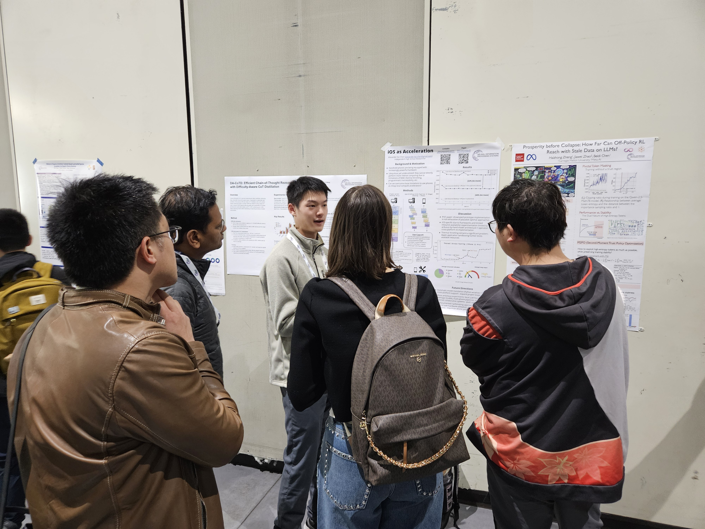
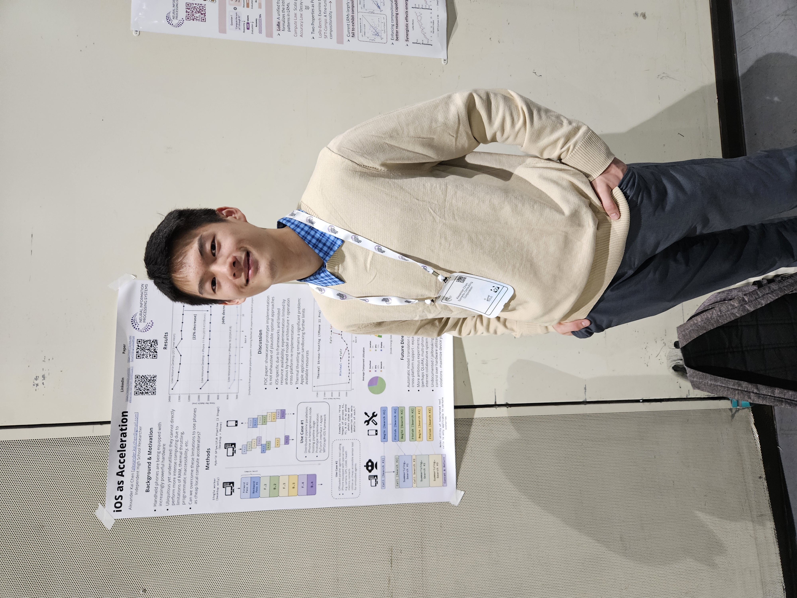

Happy New Year! This post is long overdue, but the iOS as Acceleration paper has been on arXiv for a couple of weeks now.
You can find it here: https://arxiv.org/abs/2512.22180
And here are some pictures from presenting @ NeurIPS! It was such an amazing experience as a highschooler, and I got to meet and connect w/ so many great people!

